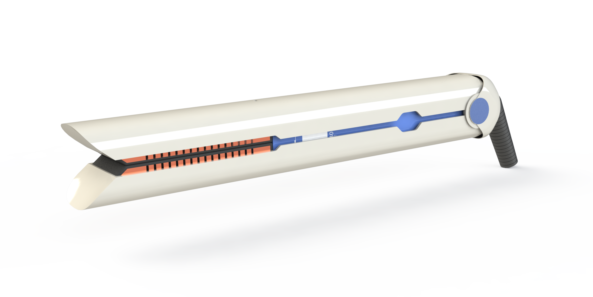

Mechanical Design
Mechanical Design Intern at Silver Lake Automation
Description of the first project.

CAD Projects
Next-Generation Dyson Corrale Hair Straightener
 I created this next-generation model of the Dyson Corrale Hair Straightener from scratch. To acheive a similar look as the original, I used the sketch picture tool to create the outer housing profile. Then, I used surface and solid modeling techniques to create the outer housing parts, plates, hinge, cord, and interior components. Key features of this next-gen design are the inclusion of a water-tank for improved straightening effect (not visible), 360° swivel chord that replaced an unwieldy rechargable battery—and of course—a freshened color scheme!
HydroFlask: Surface & Master Modeling Techniques
 I created an exact CAD model of the popular vacuum-insulated water bottle, the Hydroflask, by referencing the engineering drawings from the 18 oz model.
To create the delicate and precise curvatures in the hydroflask, I used surface modeling techniques as opposed to solid modeling techniques. In addition, I used master modeling between the bottle (master) and the boot (slave) such that the boot's dimensions are dependent on the bottle's dimensions.
I created an exact CAD model of the popular vacuum-insulated water bottle, the Hydroflask, by referencing the engineering drawings from the 18 oz model.
To create the delicate and precise curvatures in the hydroflask, I used surface modeling techniques as opposed to solid modeling techniques. In addition, I used master modeling between the bottle (master) and the boot (slave) such that the boot's dimensions are dependent on the bottle's dimensions.
This project was a fun introduction to surface modeling and turned out looking pretty sweet, if I do say so myself...
Capstone Project: The No Boil-Over Pot
What is the No Boil-Over Pot?
The No Boil-Over Pot is a smart cooking system that autonomously prevents boil-over. As opposed to a stand-alone appliances, (InstaPot, rice cooker, crockpot, etc) this system works with any pot and can integrate with most home stoves. With this setup, users don’t need to worry about their dinner boiling over, but can walk away and let the algorithm do the work. Want more details on how it works? Click here
My Contributions
I touched every aspect of this project (software, electronics & mechanical design), but here I'll detail my contributions to the handle design.
The handle needed to house the electronics (microcontroller, battery, thermocouple, etc) of the system securely and compactly, as well as be watertight. These requirements were taken into account in the final design— with separation between inner and outer housing layers providing a gap where epoxy would later fill the cracks and waterproof the interior.